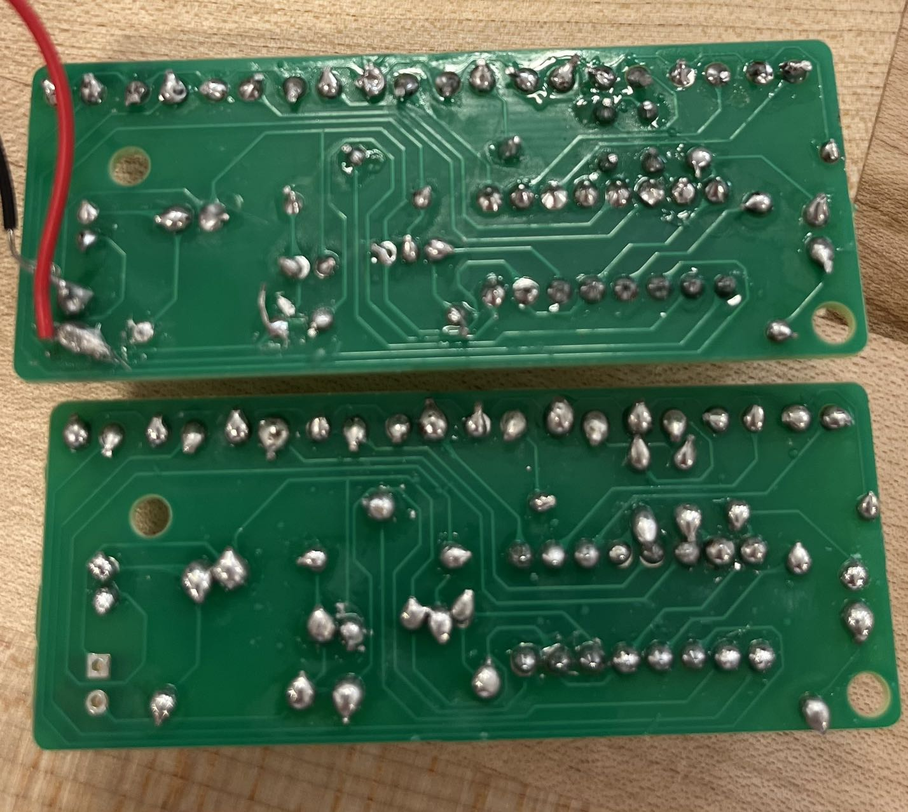

Electronics Enclosure Project
This reflection will detail each phase of my third project, from the initial soldering effort to the final laser-cut design, focusing on the lessons learned and the implications for future projects.
Reflection on the Electronics Enclosure Project
Soldering
The project began with soldering. I have experience before. So instead of striving for completion I tried my best to achieve a shiny finish. The initial challenge was ensuring quality while working quickly. In order to have a shiny finish, I could not melt the material for too long because it will become dull and dark. I also did not use magnification glasses but the precision was not that difficult. However, in our first electronic kit, we misplaced a resistor. This experience underscored the importance of balancing speed with accuracy and the potential benefits of using appropriate visual aids.
3D Printed Enclosure
The transition to designing the enclosure introduced a new set of challenges, particularly in accurately measuring the circuit board. Our ambition to create a cylindrical enclosure that covers around a rectangular base proved to be too complex within our time constraints, leading us to focus solely on the rectangular design. The primary considerations were ensuring visibility for the LEDs, accessibility for battery changes, and auditory access for the microphone.
We measured to create two rectangular boxes for the circuit board and the battery
The following is a screenshot from Fusion360 of the CAD design for the 3D printed box
The first attempt at 3D printing the enclosure revealed a fit that was too tight, prompting a design adjustment to add 0.2mm to each side. The second print corrected the fit but misplaced the LED openings. It was only on the third attempt, after utilizing the mirror function in Fusion 360 and accounting for wire placement, that we achieved a perfect fit with correctly oriented LED openings. This iterative process highlighted the value of precision in measurement and design adjustments based on print outcomes.
The second print corrected the fit but misplaced the LED openings. It was only on the third attempt, after utilizing the mirror function in Fusion 360 and accounting for wire placement, that we achieved a perfect fit with correctly oriented LED openings. This iterative process highlighted the value of precision in measurement and design adjustments based on print outcomes.
We were able to fix that on the third attempt, after utilizing the mirror function in Fusion 360 and accounting for wire placement, that we achieved a perfect fit with correctly oriented LED openings. This iterative process highlighted the value of precision in measurement and design adjustments based on print outcomes. Shoutout to my partner Marco for firguring out which specific side we need to add more measurements to. I learned to be more flexible in solving problems by learning from my teammate
Laser-Cut Enclosure
The laser-cut enclosure presented a different set of challenges, primarily in the design phase within Fusion 360. Repeated constraints errors and software instability led to multiple redesigns. Although the final product fit the circuit well, a misjudgment in the edge thickness necessitated the use of hot glue when we assemble all the sides together. This phase taught me the importance of design verification and the need for flexibility in problem-solving.

The setting of Lightburn was later changed into Speed: 25mm/s, Power Max: 100%
Lessons Learned and Future Directions
This project was a comprehensive exercise in the practical application of electronics, 3D printing, and laser cutting to create a functional and accessible prototype enclosure. Each phase of the project, from soldering to designing and manufacturing the enclosures, provided valuable insights:
Precision and Planning:The importance of accurate measurements and allowances for material properties and assembly tolerances.
Iterative Design and Flexibility: The need for adaptability in design and the willingness to iterate based on practical outcomes
Tool Utilization and Software Skills: Enhancing familiarity with design software and recognizing the impact of tool selection on project success